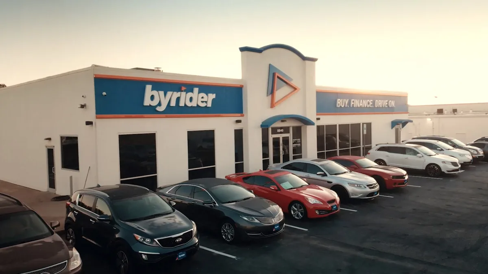
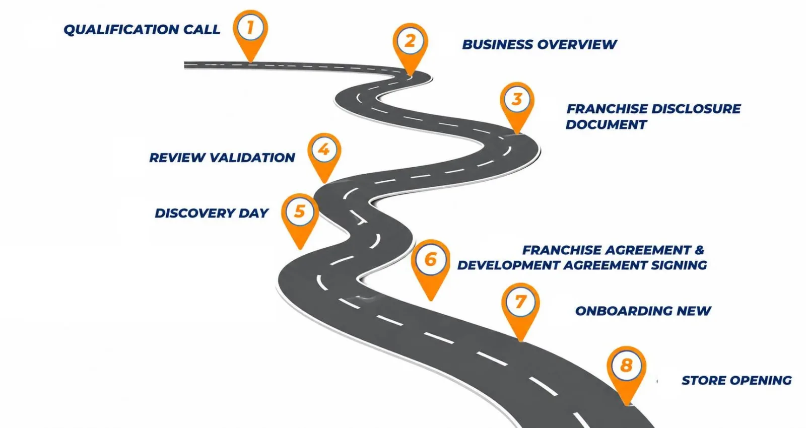
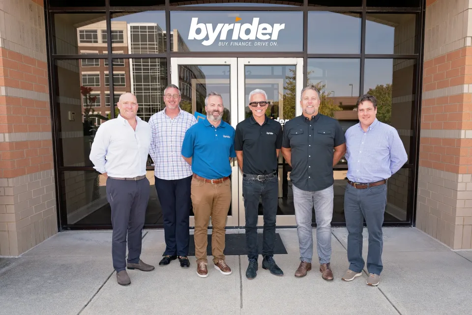
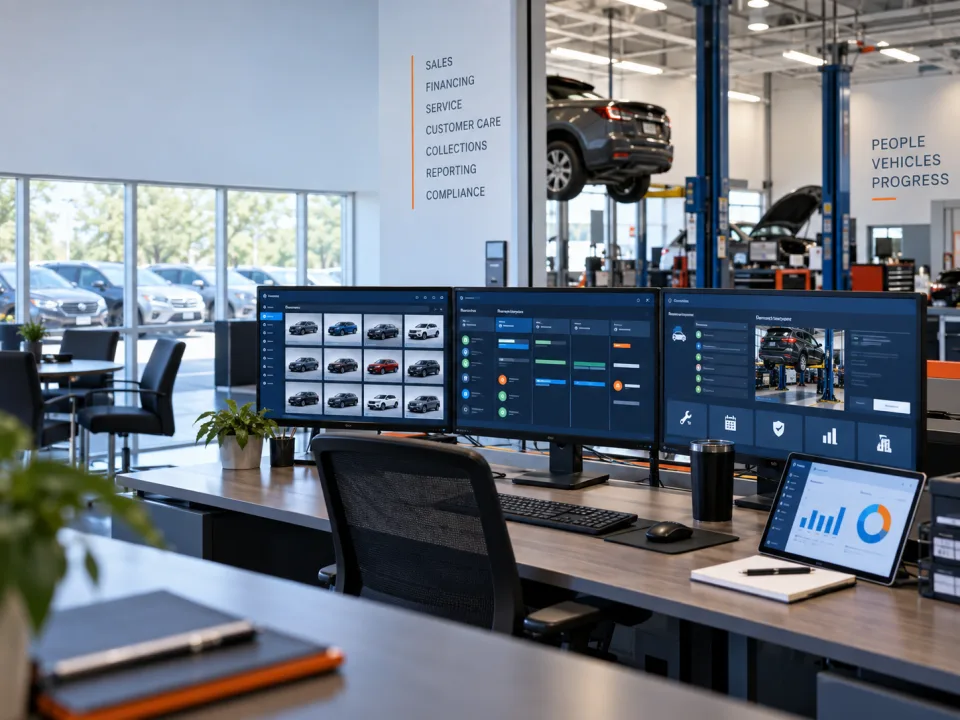
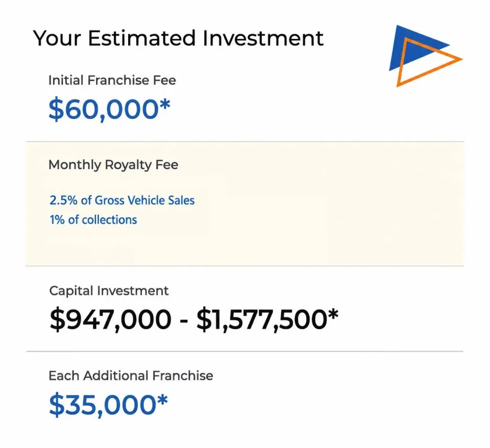

Vehicle sales
Source, merchandise, and sell used vehicles to begin the customer relationship.

Franchise opportunity | United States
Byrider connects used-vehicle sales, dealer-carried financing, and service in one operating platform built for hands-on business leaders.
The guide is informational. Review the current FDD and consult qualified advisors before making a franchise decision.
The operating thesis
Byrider's model extends beyond the vehicle transaction. Franchise owners operate the retail, financing, collections, and service functions that shape the customer journey, supported by one brand and one connected system.
The model
Each part of the business supports the next. That creates a more complete, but more demanding, operating model.
Source, merchandise, and sell used vehicles to begin the customer relationship.
Underwrite and service the account with disciplined collections and compliance.
Support vehicle ownership through an in-house service operation.

Owner fit
The model may suit experienced dealer principals, finance or collections leaders, and multi-unit operators ready to build teams and execute systems.

Support system
Market evaluation, site selection, facility planning, and opening preparation.
Training across sales, service, finance, accounting, compliance, and management.
Brand strategy and professionally developed campaign resources.
Executive Franchise Consultants and functional experts provide ongoing guidance.
“The operations team helps you decipher what the data is telling you and how to create actionable tactics.”
Dale Boone, Byrider franchise ownerSource: Byrider's official franchise website. Individual experiences vary.
Integrated technology
Discover connects sales, inventory, financing, collections, service, customer communication, reporting, and compliance.
Technology supports execution; it does not replace disciplined management.

Investment
Use these figures as a starting point. The current Franchise Disclosure Document controls.
For a first location. Byrider currently lists $35,000 for each additional location purchased.
Currently listed as 2.5% of gross vehicle sales plus 1% of collections.
Byrider's stated average timeline from agreement to store opening.
Review Item 7 for estimated investment information, including market, facility, inventory, staffing, technology, working capital, and receivables funding. Byrider does not provide or guarantee franchisee financing.

Your diligence path
Understand the model and write down the assumptions you need to test.
Share your background, market interest, timeline, and intended operating role.
Examine Items 7 and 19 with qualified legal and financial advisors.
Confirm site, financing, staffing, inventory, training, and launch requirements.
Common questions
Byrider highlights varied owner backgrounds and provides training. The model still requires engaged leadership, financial discipline, and strong team execution.
No. Byrider states that it does not provide or guarantee franchisee financing. Any lender decision is subject to lender requirements and approval.
No. Results vary. Any permitted financial performance representations belong in Item 19 of the current FDD.
Review the current FDD, especially Items 7 and 19, and consult qualified legal and financial advisors.
Ready to test the fit?
Get a practical guide to the model, owner fit, support system, technology, investment questions, and diligence path.
A Byrider Franchise Development representative will follow up using your preferred contact method.